Academy / User guide / Getting started
1. Getting started
The E1 window: menus, the left rail, the explorer, tabs, the side panel, the status bar, keyboard shortcuts, your settings and Help.
About this guide
This guide shows you around the E1 window: the menus, the left rail and its places, the explorer, the tabs, the side panel, the status bar, the keyboard shortcuts, your own settings and Help. Read it first. The other guides assume you know where these things are.
The usual order
- Learn the window layout and the left rail.
- Look through the three menus: File, Edit and Help. Everything else is where you work: on the drawing toolbar, in the right-click menus and on the buttons of each page.
- Work with tabs and the path bar, Back and Forward, floating windows and hiding and showing panels.
- Read the status bar and choose your appearance.
- Learn the keyboard shortcuts.
- Open the places (Inbox, Configuration, Settings, Account) and set your Settings.
- See what is still being built in Under construction.
Before you start
E1 is open in the browser or the desktop app, and you are signed in where your installation asks for it. See Sign in to E1. The pictures in this guide show the demo project Demo Plant of the organization Demo Company in the dark appearance.
The E1 window
The E1 window has seven parts: the menu bar, the left rail, the explorer, the tab strip, the editor area, the Alex side panel, and the status bar. Everything you do starts in one of them.
- Where
- The whole window, as soon as E1 has opened
- Who
- Everyone who can open E1
- Before you start
- E1 is open and you are signed in where your installation asks for it.
The parts of the window
- Menu bar. The E1 logo and the word E1, then the menus File, Edit and Help, and the arrows Back and Forward.
- Left rail. Icons only: the Inbox bell, the Explorer and Alex switches, Configuration, Settings and your account.
- Explorer. The tree of your projects. Its header shows the name of your organization and the explorer's buttons.
- Tab strip. One tab for each open 2D space, list, object, place or page.
- Editor area. The path bar and the content of the active tab, for example a drawing with its toolbar.
- Side panel. Alex, the one assistant, with three tabs: Co-engineer (its findings, local), Agent (a conversation with a language model, in the mode Agent, Ask or Plan) and E1 Guide.
- Status bar. Whether your changes are saved, what is selected, the appearance and the store E1 runs on.
You can drag the splitters between the explorer and the editor, and between the editor and the side panel, to change their widths. The explorer can be dragged as narrow or as wide as you like (260 pixels at first), the side panel 280 to 560 pixels (340 at first). E1 keeps these widths in this browser. A splitter stops where the editor would get narrower than 300 pixels. In a window too narrow for the widths you set, the explorer gives up width first, then the side panel, so the window never scrolls sideways and nothing is cut off at the right; your widths are kept, and a bigger window shows them again.
Steps
| # | Action | Expected result |
|---|---|---|
| 1 | Open E1. | The status bar shows Saved, the menu bar reads E1, and the explorer tree is visible. |
| 2 | Look at the explorer header. | It shows a button named after your organization (here Demo Company). There is no Workspace row in the tree. |
| 3 | Close every tab with its ×. | The editor shows No tab open and "Select a project or section in the explorer to open it here." |
| 4 | Drag the splitter to the right of the explorer to the right. | The explorer gets wider; dragged to the left it gets as narrow as you like. After a reload it keeps its width. |
| 5 | Click File, then point at Edit without clicking. | The Edit menu opens in place of the File menu: while a menu is open, pointing at another menu name opens it. |
| 6 | Press Esc (or click outside the menu). | The menu closes. |
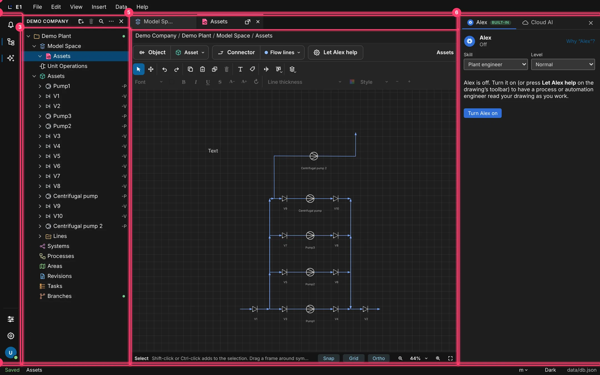
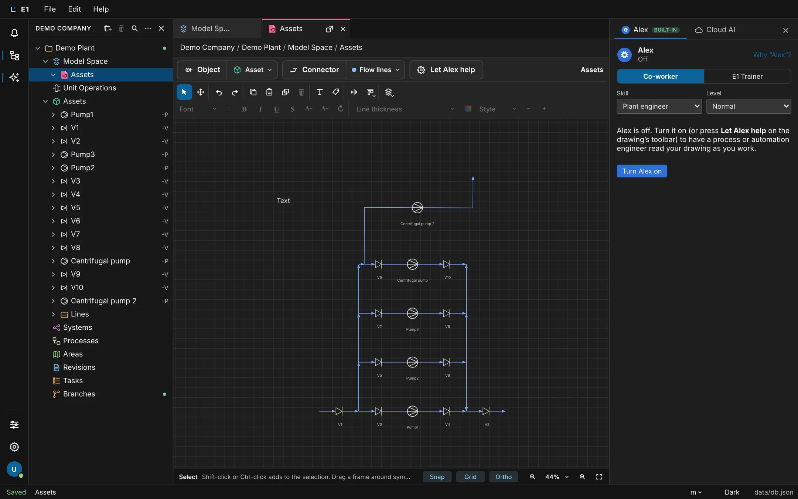
Review check A1 expects a Workspace row and a Lines section in the explorer, which E1 does not have: the explorer header names the organization; the drawn runs are in Assets ▸ Pipelines, Cables and wires and Signal lines, not in a section.
Watch the lesson: A tour of the E1 window · The left rail (Getting started with E1 · 7 min) · Show me how in E1: A tour of the E1 window
Getting started: your first steps
E1 is large, and you do not need all of it on the first day. Getting started is a short numbered list of first steps on the sample plant, Sample E1. One step is open at a time, with one button, Show me. A step can also be done for you by Alex or watched as a short film, and ticks itself when you have done it.
- Where
- Help → Getting started. It also opens by itself, as a tab, the first time you sign in.
- Who
- Everyone who can open E1
- Before you start
- Nothing. The steps are taken on your own copy of Sample E1, where nothing you do can break anything.
Steps
| # | Action | Expected result |
|---|---|---|
| 1 | Open Help → Getting started. | A tab Getting started with one numbered list of steps. One step is open, the next one to do (Next for you), with one button, Show me. If you have no Sample E1 yet, Get Sample E1 is at the top: click it first. |
| 2 | On the open step, click Show me. | The step's E1 Guide lesson starts: it opens what the step is shown on (for the first steps, a P&ID of Sample E1 with pump 21-PA-2101A in view) and Alex shows you where to click, with bubbles on the real controls. |
| 3 | Follow Change an object once, and see it everywhere: double-click the pump, type 400 for Rated power, click Data sheet, go on to the P&ID. | The pump's data sheet and the attributes beside its symbol on the P&ID show 400 kW: one object, shown three ways. Edit → Undo takes the change back. |
| 4 | Under the button, click Alex, do it for me. | The same lesson runs with "Alex is doing the steps for you.": Alex clicks and types on the real controls at a pace you can follow. Esc stops it. See Let Alex do a step. |
| 5 | Under the button, click Watch (or Watch the lesson). | The step's short film plays in a small player over your work; where the film is not recorded yet, the Academy lesson of the same feature opens in the browser. |
| 6 | Do a step in any way, for example open a 2D space from the explorer, and come back to the tab. | The step shows a check mark and Done, the bar and "1 of 3 steps done" follow, and the next step opens. I have done this ticks a step by hand. Click another step's name to open that one. |
| 7 | Beside Steps for: under the list, click Process engineering, Instrumentation and control, Electrical, I manage engineers or Just looking. | The list changes to the steps of that kind of work (three steps before you choose). What you have done stays done. The answer is kept with your account. |
| 8 | Click I know E1, hide this. | "Getting started is hidden": it no longer opens by itself and Alex makes no offers. Show it again brings it back; Help → Getting started always opens it. |
| 9 | After you have seen Getting started, press Ctrl+Z three times in a row on a drawing (or wait a minute without doing anything on a drawing or a list). | One line from Alex at the bottom right, with one button, Show me, and Alex, do it for me, Not now and Don’t offer again beside it. It goes away by itself after half a minute. Alex offers help: on under the list turns the offers off and on. |
| 10 | Open Alex and click E1 Guide. | Next for you at the top shows your next first step with Show me, and All first steps to come back to the list, until your first steps are done. |
| 11 | During a trial, read the short mails from E1. | One on the day you join, one after 2 days and one after 5, each about one first step, with a button that opens E1 at its lesson. The owner of the trial gets two more: after 14 days (invite a colleague) and 5 days before the trial ends. A step you have already done brings no mail. Tips by mail: on under the list stops them. |
Only your answer and the time each step was done are kept, with your settings. Which lessons you took is never recorded.
Watch the lesson: Getting started · Learning E1 with the E1 Guide (Getting started with E1 · 7 min) · Show me how in E1: Take your first steps with Getting started
Terms and conditions: accept before first use
Before you use E1 for the first time, you read the E1 Terms and License Agreement and accept it, for yourself and for the organization you use E1 for. You accept it once: E1 keeps it on your account, with the version and the date, in the browser, the desktop app and E1 Reviewer alike. Until you accept, E1 does not open and does nothing for you. For your organization, the same agreement was already accepted when it ordered E1: LANXTOR's quotes and invoices refer to it, and a purchase order or an online order accepts it.
- Where
- The first screen after you sign in, or when the desktop app starts for the first time; later: Help → Terms and conditions
- Who
- Everyone, for themselves
- Before you start
- You are signed in where your installation asks for it.
Steps
| # | Action | Expected result |
|---|---|---|
| 1 | Open E1 for the first time (sign in, or start the desktop app). | Instead of E1, the page E1 Terms and License Agreement opens with "Before you use E1, read the terms and license agreement and accept it.", the version date, the links Open on lanxtor.com and PDF, and the text, in parts A to H, in a box you can scroll. Accept and continue is greyed out. |
| 2 | Read the text, then tick I have read and accept the E1 Terms and License Agreement, for myself and for the organization I use E1 for. | The box is ticked and Accept and continue can be clicked. |
| 3 | Click Accept and continue. | E1 opens. Next time it opens at once. |
| 4 | Choose Help → Terms and conditions. | A dialog Terms and conditions shows the agreement's version, "You accepted this version on" and the date, and the whole text. PDF downloads it, Open on lanxtor.com opens it on the website; Close (or a click outside, or Esc) closes it. |
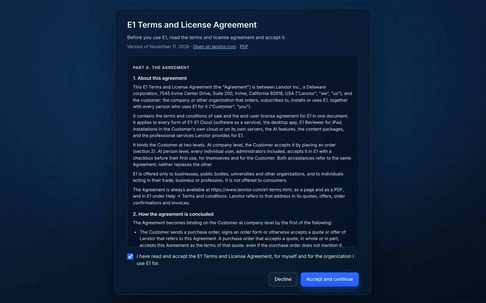
Not ready to accept? Click Decline and sign out (in the desktop app, Decline closes the window). Nothing of your organization is shown or changed. The same agreement is always on the website, as a page and a PDF: E1 Terms and License Agreement. It covers the license, E1 Cloud (availability, security, backups, your data and its export), the AI features (models, no training on your data, checking what Alex produces), fees, liability and the general terms. Where your organization has signed its own agreement with LANXTOR, that agreement comes first where it differs.
Watch the lesson: The terms and license agreement (Getting started with E1 · 2 min) · Show me how in E1: The terms and conditions you accepted
The left rail
The narrow strip of icons on the far left opens the places of E1 (Inbox, Configuration, Settings, Account) and shows or hides the explorer and the Alex panel.
- Where
- The left edge of the window
- Who
- Everyone
- Before you start
- E1 is open.
The icons, from top to bottom
| Icon (name on hover) | What it does |
|---|---|
| Bell, Inbox | Opens the Inbox tab. A badge shows how many items are unread (at most "99+"). |
| Tree, Hide Explorer / Show Explorer | Hides or shows the explorer. It is highlighted while the explorer is shown. |
| Sparkle, Hide Alex / Show Alex | Hides or shows the side panel. |
| Configuration | Opens the Configuration tab: the shared data model, library, catalogs and project settings. |
| Gear, Settings | Opens your own Settings. |
| Your picture or initials (U while nobody is signed in), Signed in as <your name> (Signed-in user without sign-in) | Opens the Account tab. |
Steps
| # | Action | Expected result |
|---|---|---|
| 1 | Click the bell. | An Inbox tab opens and is selected; the bell is highlighted. |
| 2 | Click Configuration, then the gear, then your initials. | Each opens its tab (Configuration, Settings, Account) and becomes the highlighted icon. |
| 3 | Look for Messages and History on the rail. | They are not there: neither has a button on the screen yet. |
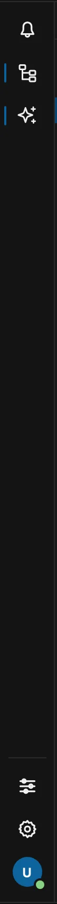
Watch the lesson: A tour of the E1 window · The left rail (Getting started with E1 · 7 min) · Show me how in E1: A tour of the E1 window
The places: Inbox, Configuration, Settings and Account
A place is a page that is not part of one project. Each opens as its own tab from the left rail. The Inbox collects what is addressed to you, Configuration holds the settings you share with your organization, Settings holds your own preferences, and Account shows who you are and what you may do.
- Where
- Left rail
- Who
- Everyone. The Inbox and the Account details need a server with sign-in.
- Before you start
- E1 is open.
What each place shows
- Inbox (bell): with sign-in, the real Inbox with the heading Inbox: mentions, replies and tasks. Without sign-in it shows two example notifications ("A drawing was shared with you", "A review was requested").
- Configuration: object classes, attributes, shapes, relationships, the company library, catalogs and the project settings. See the library guide.
- Settings (gear): your own preferences. See Your settings.
- Account (your initial): with sign-in, the heading Account, your profile with Sign in as someone else and Sign out (and Switch organization when you belong to more than one), Your access (license, organization role, and your projects in a table), Passkeys and Access tokens. Without sign-in it is a placeholder.
- History (every change in the project) and Messages have no button on the screen yet. The changes of one object are on its History tab.
Steps
| # | Action | Expected result |
|---|---|---|
| 1 | Click the bell on the rail. | The Inbox tab opens. Signed in, it shows your notifications or, when there are none, "Your Inbox is empty." |
| 2 | Click Configuration on the rail. | The Configuration tab opens with its list of sections, starting with Object classes. |
| 3 | Click your initial at the bottom of the rail. | The Account tab opens. Signed in: your name, email and organization. Not signed in: the kicker Placeholder and "The signed-in user, their organization, and assigned licenses will appear here." |
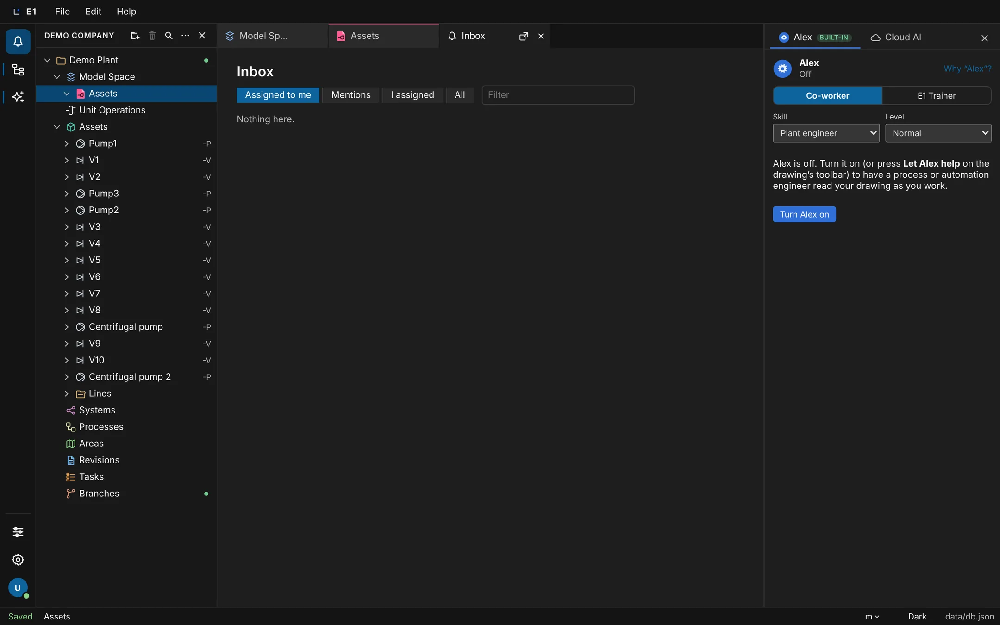
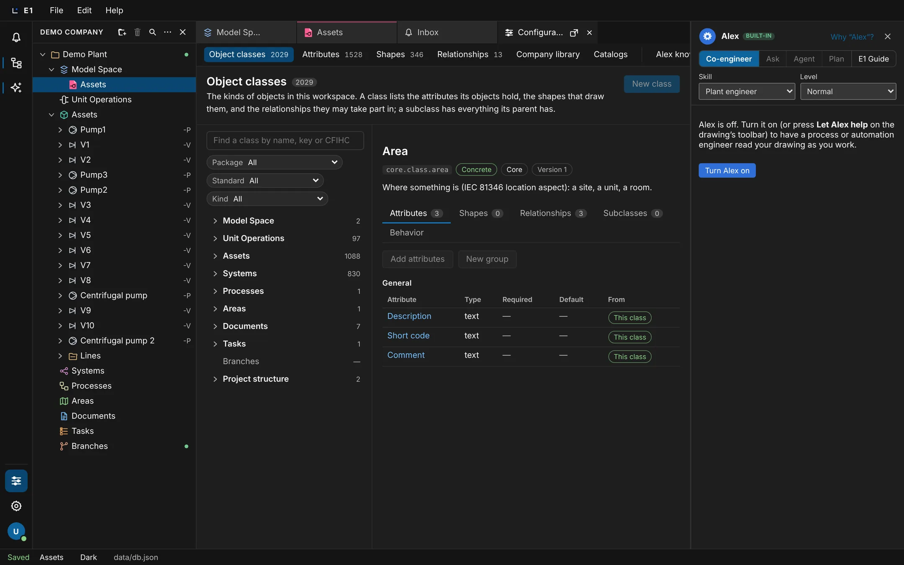
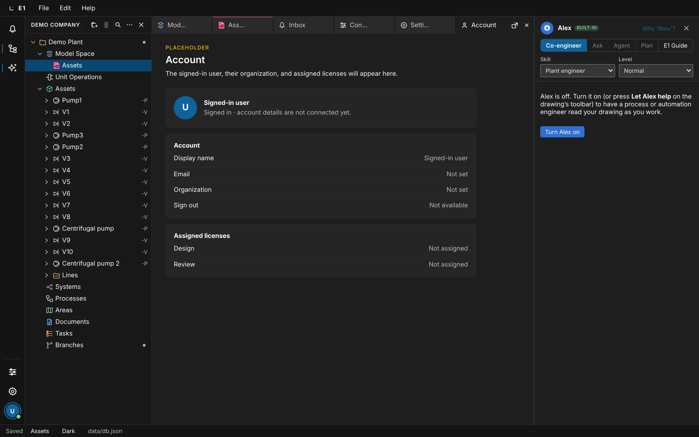
Watch the lesson: The places of E1 · Tabs and the path bar (Getting started with E1 · 8 min) · Show me how in E1: Find your way: the places
Tabs and the path bar
Everything you open (a 2D space, an object, a list, a place) gets a tab. Under the tabs the path bar shows where the open item lives, from the organization down. E1 remembers your tabs for you.
- Where
- The tab strip above the editor, and the path bar under it
- Who
- Everyone
- Before you start
- A project is in the explorer.
How tabs work
- Each tab has an icon, a name, Detach (to a floating window) and Close. Hover a tab to see its full path, for example Demo Company / Demo Plant / Model Space / Assets.
- Middle-click a tab to close it. Turn the mouse wheel over the strip to scroll it sideways.
- Right-click a project in the explorer → Close all tabs closes every tab of that project and leaves the others open; greyed out when none is open. A project moved to the Bin closes its tabs too.
- With many tabs, a button All open tabs (N) appears at the end of the strip. It lists every tab, with a search box Search tabs; ↑ and ↓ move through the list.
- Dragging a tab floats it only once the pointer leaves the tab strip; a short drag inside the strip does nothing. Tabs cannot be dragged to a new order.
- The path bar shows crumbs separated by /. The first one is the organization. Click a crumb to select that item. Places and Under construction have no path bar.
Steps
| # | Action | Expected result |
|---|---|---|
| 1 | Double-click a 2D space in the explorer. | A tab opens with the drawing; the path bar shows the organization, the project, Model Space and the 2D space. |
| 2 | Click × (Close) on that tab. | The tab is gone, with its drawing. |
| 3 | Double-click the 2D space again. | The tab is back, active, with the drawing. |
| 4 | Double-click ten or more objects under Assets. | The tabs shrink and All open tabs (N) appears at the end of the strip. |
| 5 | Click All open tabs (N), type V5 in Search tabs and press Enter. | The list shows one entry; after Enter the V5 tab is active. |
| 6 | Click the project's crumb in the path bar. | The project is selected in the explorer. |
| 7 | Reload the page. | The same tabs are open and the same tab is active. |
Watch the lesson: The places of E1 · Tabs and the path bar (Getting started with E1 · 8 min) · Show me how in E1: Tabs and the path bar
Back and Forward
Some links open what they point at in the same tab, for example Classes on a content package in Configuration. Back takes you to where you were, and Forward takes you there again, as in a web browser.
- Where
- Menu bar, right of Help: the two arrows Back and Forward
- Who
- Everyone who can open E1
- Before you start
- E1 is open.
Steps
| # | Action | Expected result |
|---|---|---|
| 1 | On the rail, open Configuration and click Content and standards. | The content packages are listed. |
| 2 | On the Core card, click Classes. | Configuration shows Object classes. |
| 3 | Click Back (the left arrow in the menu bar), or press Alt+Left (⌘[). | Content and standards is shown again. |
| 4 | Click Forward, or press Alt+Right (⌘]). | Object classes is shown again. |
| 5 | Open two tabs one after the other, then click Back. | The tab you were on before is in front again. |
Back and Forward remember the tabs you were on and, in Configuration, the section and item. The back and forward buttons of a mouse do the same. A tab you have closed is skipped; Configuration, Settings and the other places of the rail open again. Back and Forward are kept for this window until it closes; they are greyed out when there is nowhere to go.
Watch the lesson: Tabs and the path bar · Floating windows · Hiding and showing panels (Getting started with E1 · 7 min) · Show me how in E1: Back and Forward
Feedback
Tell the E1 team whatever you want, whenever you want: a problem, an idea, what you like, a rating. E1 never asks you for a rating; the Feedback button is simply always there. You can speak instead of typing, add screenshots, PDFs and short clips, and send your last actions in E1 so a problem can be followed.
- Where
- Menu bar: the blue Feedback button after Back and Forward
- Who
- Everyone who can open E1
- Before you start
- E1 is open. To speak, the browser needs a microphone and your permission to use it.
Steps
| # | Action | Expected result |
|---|---|---|
| 1 | Click Feedback in the menu bar. | The Feedback window opens with Problem chosen. |
| 2 | Choose Problem, Idea, Praise or Other, and click a star under it to rate E1 if you like. | The choice is highlighted; a second click on the same star removes the rating. |
| 3 | Type in the box, or press the microphone, speak, and press it again. | Listening…; your words appear in the box as you speak, to correct. |
| 4 | Click Attach files…, or paste a screenshot with Ctrl+V (⌘V), or drop files on the window. | The files are listed with their size; × removes one. |
| 5 | Leave Attach my last actions ticked and click Show. | The list shows what you did just before: tabs opened, changes made, and messages that something was refused or failed, in red. |
| 6 | Leave You can contact me about this feedback ticked to get an answer, and check the email address beside it; untick it if you want no reply. | Ticked, the box shows your account's email, which you can change. Unticked, it says nobody will contact you. |
| 7 | Click Send. | Thank you!: the feedback is with the E1 team, and, when you ticked You can contact me, it says we will be in touch at your email. |
Files: pictures (PNG, JPEG, GIF, WebP), PDFs and short clips (MP4, WebM, MOV), up to 5 files and 20 MB together. The last actions are kept only in this browser window and are sent only with feedback you send; they never contain what you typed or the contents of your drawings. With each feedback E1 also sends where you were (the open tab and the selected item), its version and your browser. Feedback goes to the E1 team at support@lanxtor.com; your email is included only when you tick You can contact me.
Watch the lesson: Getting help in E1 · Feedback · What is new in E1 (Getting started with E1 · 6 min) · Show me how in E1: Send feedback
Floating windows
Take a tab out of the main window to see two things side by side, for example a drawing on a second screen. Changes you make in a floating window are saved like any other.
- Where
- A tab's Detach button, or drag a tab out of the tab strip; the same for a chat tab in Alex’s conversation
- Who
- Everyone
- Before you start
- In the browser, allow pop-ups for E1.
Steps
| # | Action | Expected result |
|---|---|---|
| 1 | On the Assets 2D space tab, click Detach (the box with an arrow). | A new window opens with the drawing. Its title bar shows the tab's name and an Attach button. |
| 2 | In the floating window, place a pump with Object → Pump → Add to diagram and click on the 2D space. | The pump appears in both windows; the main window's status bar shows Saved. |
| 3 | Meanwhile, rename the project in the main window (select it, F2, type, Enter). | Both changes are kept and both windows show them. |
| 4 | Click Attach. | The floating window closes and the tab is back in the main window. |
The chat tabs in Alex’s conversation float the same way: click their Detach, or drag them out of the chat tab bar. In the desktop app a floating window is a real window of its own, and E1 opens it again where it was at the next start. When the item in a floating window is deleted, it shows "This tab is closed" and "The item is no longer in the project."
Watch the lesson: Tabs and the path bar · Floating windows · Hiding and showing panels (Getting started with E1 · 7 min) · Show me how in E1: Float a tab in its own window
Hide and show the explorer and the side panel
Hide the explorer or the Alex panel to give the drawing more room, and bring them back from the left rail. E1 remembers what you hid.
- Where
- The × in the explorer header and at the right of Alex's header line; the rail icons
- Who
- Everyone; it is your own view
- Before you start
- Both panels are shown.
Steps
| # | Action | Expected result |
|---|---|---|
| 1 | Look at the rail. | The Explorer and Alex icons are both highlighted. |
| 2 | Click × (Hide explorer) in the explorer header. | The explorer is gone; the rail's Explorer icon is no longer highlighted. |
| 3 | Click × (Hide Alex) at the right of Alex's header line. | The side panel is gone; its rail icon is no longer highlighted. |
| 4 | Reload the page. | Both panels stay hidden. |
| 5 | Click the rail's Explorer icon (Show Explorer). | The explorer is back. |
| 6 | Click the rail's sparkle icon (Show Alex). | The side panel is back with Alex, on the tab you left it. |
| 7 | Click the sparkle icon twice more. | The panel hides, then shows again. |
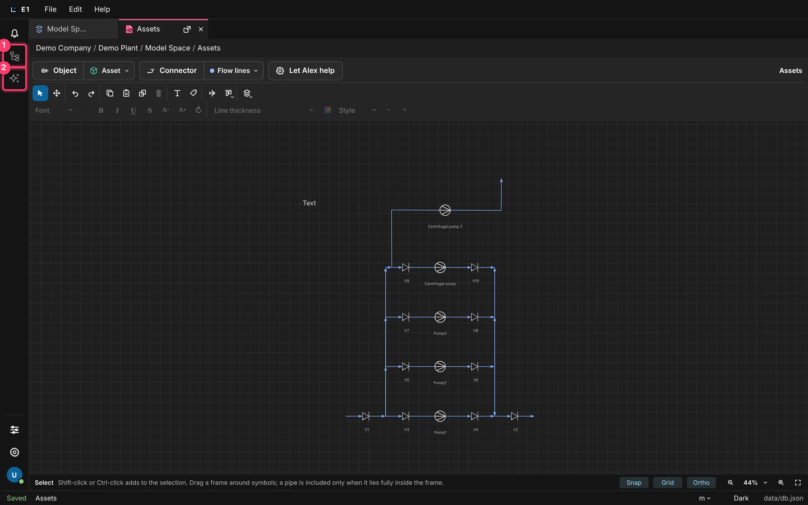
Which panels are shown, and their widths, are kept in this browser only.
Watch the lesson: Tabs and the path bar · Floating windows · Hiding and showing panels (Getting started with E1 · 7 min) · Show me how in E1: Hide panels and make room
The status bar
The strip along the bottom tells you whether your changes are saved, what is selected, what your last edit touched, and which store E1 runs on. It also holds the appearance switch.
- Where
- The bottom edge of the window
- Who
- Everyone
- Before you start
- E1 is open.
From left to right
- Save state: Loading, Saving…, Saved, Save failed, Changed elsewhere — reloaded or Change refused. A failure is red, and its reason is shown next to it and on hover.
- Name of the selected item.
- Impact after an edit on the drawing, for example "Connected: P1, T1 and 3 lines". Hover it to see each symbol and line. It stays until your next edit.
- Appearance chip Dark or Light.
- Store: where your projects are kept. See Which store E1 runs on.
Steps
| # | Action | Expected result |
|---|---|---|
| 1 | Rename a project. | The save state briefly reads Saving…, then Saved. |
| 2 | Move a pump on the drawing that has lines connected. | The impact reads "Connected: …" with the connected symbols and lines. |
| 3 | As a Reviewer on a project, try to move a symbol. | The save state reads Change refused in red, with the reason, for example "You may not do this here: it needs drawing.edit on …". |
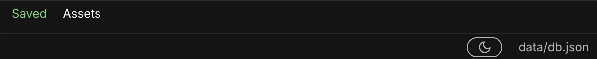
Watch the lesson: Reading the status bar (Getting started with E1 · 4 min) · Show me how in E1: Read the status bar
Light and dark appearance
E1 opens in the dark appearance. Switch to light whenever you like; the choice is kept in this browser and changes nothing for anyone else.
- Where
- The status bar chip Dark/Light; Settings → Appearance → Theme
- Who
- Everyone
- Before you start
- E1 is open.
Steps
| # | Action | Expected result |
|---|---|---|
| 1 | Click the Dark chip in the status bar (hover text "Switch to light appearance"). | E1 turns light; the chip reads Light. |
| 2 | Click the chip again. | E1 is dark again; the chip reads Dark. |
| 3 | Choose Light in Settings → Theme, then reload. | E1 stays light after the reload. |
The appearance is kept per browser, not per account: on another computer you start in dark again.
Watch the lesson: Where E1 is being built · Light and dark appearance (Getting started with E1 · 7 min) · Show me how in E1: Read the status bar
The language E1 is shown in
E1 is shown in English until you choose another language. Your choice is kept in this browser and changes nothing for anyone else.
- Where
- Settings → System settings → Language and region → Language
- Who
- Everyone
- Before you start
- E1 is open.
Steps
| # | Action | Expected result |
|---|---|---|
| 1 | Open Settings (the gear on the left rail), the tab System settings. | The card Language and region shows Language with English, Norsk and 中文. Each language is named in itself. |
| 2 | Click Norsk. | Settings and the menu bar are shown in Norwegian at once: Innstillinger, and the menus Fil, Rediger and Hjelp. |
| 3 | Reload, or open E1 in a second window. | E1 is still in Norwegian, and the second window follows. |
| 4 | Click English. | Everything is in English again. |
E1 is being translated. For now, Settings and the menu bar are shown in Norwegian and Chinese. Everything else, including the E1 Guide and these user guides, is still in English. The language is kept per browser, not per account.
Watch the lesson: Usage statistics · What E1 remembers · Units of measurement · … (Getting started with E1 · 7 min) · Show me how in E1: Your settings
Keyboard shortcuts
The Keyboard shortcuts dialog lists the keys and mouse moves of E1. This section lists them too, with a few that the dialog does not show.
- Where
- Help → Keyboard shortcuts
- Who
- Everyone
- Before you start
- E1 is open.
Steps
| # | Action | Expected result |
|---|---|---|
| 1 | Choose Help → Keyboard shortcuts. | The dialog Keyboard shortcuts opens with one row per key and what it does. |
| 2 | Click Close (or click outside the card). | The dialog closes. Esc does not close it. |
The list in the dialog
| Key | What it does |
|---|---|
| Scroll | Zoom the drawing |
| Middle-drag or right-drag | Pan |
| Drag on empty space | Frame select |
| Esc | Cancel the stroke or clear the selection |
| F | Flip the selected symbol |
| Delete | Delete the selection |
| Enter on the drawing or in the explorer | Open the selected symbol or row |
| ↑ ↓ ← →, Home, End | Move in the explorer, open and close its rows |
| F2 | Rename the selected project |
| Shift+F10 or the menu key | Open the menu of the selected row in the explorer, as a right-click does |
| Enter | Send the chat message |
| Shift+Enter | New line in chat |
| Ctrl+Z (⌘Z) | Undo your last change |
| Ctrl+Shift+Z, Ctrl+Y (⇧⌘Z) | Redo |
| Ctrl+S (⌘S) | Save now |
| Ctrl+P (⌘P) | Print the open 2D space |
| Ctrl+X, C, V (⌘X, C, V) | Cut, copy, paste on the drawing |
| Ctrl+D (⌘D) | Duplicate the selection |
| Ctrl+A (⌘A) | Select everything on the drawing |
| Ctrl and + or −, Ctrl+0 (⌘) | Zoom in, zoom out, fit the drawing |
| Ctrl and scroll (⌘) | Make the explorer or an object window larger or smaller |
| Ctrl and + or −, Ctrl+0 in the explorer or an object window | Larger, smaller, back to 100% |
| H, V, or hold Space | Pan tool, Select tool, pan while held |
| P, L, C, W | Draw Flow lines, Logic, Cable or Wire (Tool keys and the command search) |
| T, G, A, B | Text, Tag, Add…, Frame |
| Ctrl+K or ⌘K | Search symbols and commands on the drawing |
| Alt+Left (⌘[) | Back to where you were |
| Alt+Right (⌘]) | Forward again |
Not in the dialog, but they work
- In the explorer: F2 also renames an object row; Delete or Backspace deletes the selected row; Esc clears several picked projects or closes the search; Enter on a drawing shortcut under an object opens that drawing.
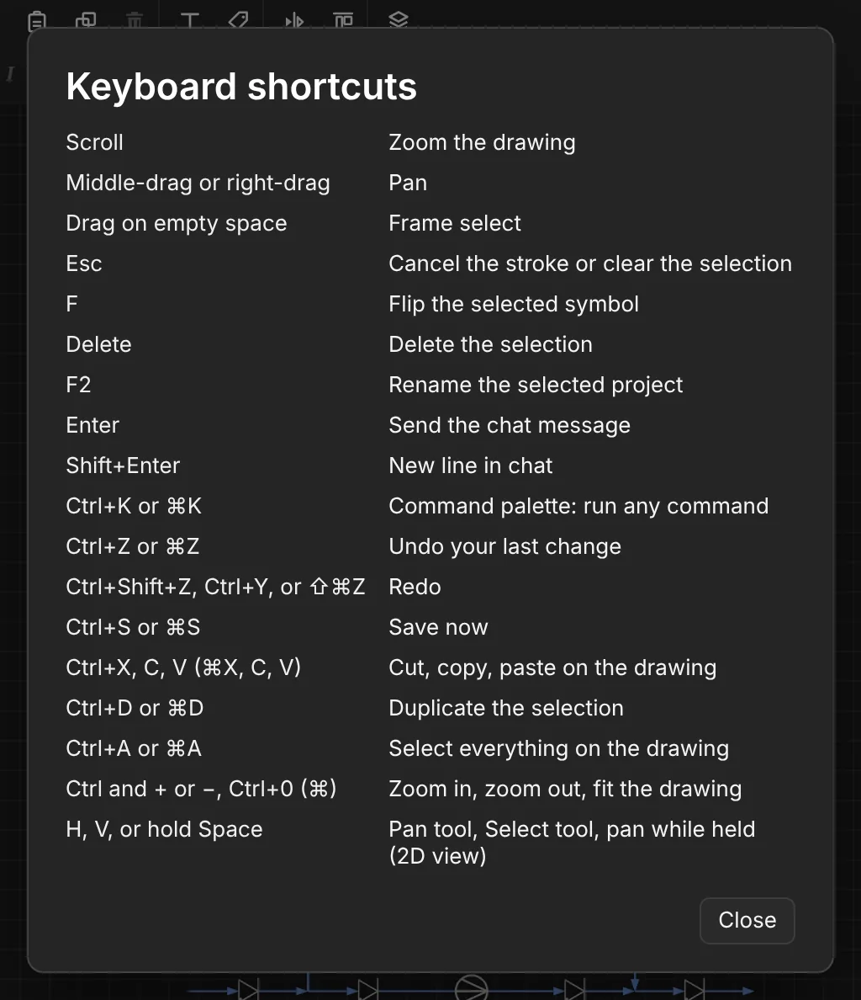
The shortcuts do nothing while you are typing in a text field, except Ctrl+S and Ctrl+P.
Watch the lesson: Keyboard shortcuts · Your settings (Getting started with E1 · 8 min) · Show me how in E1: The keyboard shortcuts worth knowing
Your settings
Settings has two tabs. System settings holds your own preferences: appearance, how Alex changes your drawings with its AI help, which notifications also come by email, and whether you share usage statistics (Usage statistics). Changing them changes nothing for anyone else. Project settings holds the selected project's settings (content packages, drawing, units, tag rules, access and the rest), named "Project:" and the project's name; they apply to everyone in the project. To change several projects together, use Configuration → Project settings.
- Where
- Left rail → gear Settings → tab System settings or Project settings
- Who
- Everyone
- Before you start
- E1 is open. Email notifications need sign-in.
The cards of System settings
| Card | Row | Choices |
|---|---|---|
| Appearance | Theme | Dark / Light |
| Appearance | Density | "Not set" (not built yet) |
| Alex’s AI help | Changes Alex makes with AI help | Apply directly / Review first |
| Alex’s AI help | What is already drawn | Protect the arrangement / May be rearranged |
| Notifications | When someone mentions you in a chat | Email me (default) / In the app only |
| Notifications | When someone replies to your message | Email me (default) / In the app only |
| Notifications | When someone assigns you a task | Email me (default) / In the app only |
| Notifications | When a task you assigned is done | Email me / In the app only (default) |
| Language and region | Language, Time zone, Date format | "Not set" (not built yet). "Units follow the project." |
| Shared settings | — | Buttons Project settings, Project defaults, Data model: they open Configuration at that section. |
Steps
| # | Action | Expected result |
|---|---|---|
| 1 | Click the gear on the rail. | The Settings tab opens with the heading "Settings", the tabs System settings (chosen) and Project settings, the badge Only you and "Your own preferences. Changing them changes nothing for anyone else." |
| 2 | Set Changes Alex makes with AI help to Review first. | The choice is selected. Alex now shows the changes it makes with its AI help for you to apply or discard. |
| 3 | Set When someone mentions you in a chat to In the app only. | The choice is selected. Mentions still show on the bell, but no email comes. |
| 4 | Click Data model under Shared settings. | The Configuration tab opens at its data model. |
| 5 | Select a project in the explorer, open Settings again and click the tab Project settings. | "Project:" and the project's name, the badge This project, then the tabs Content packages, Drawing … Access. |
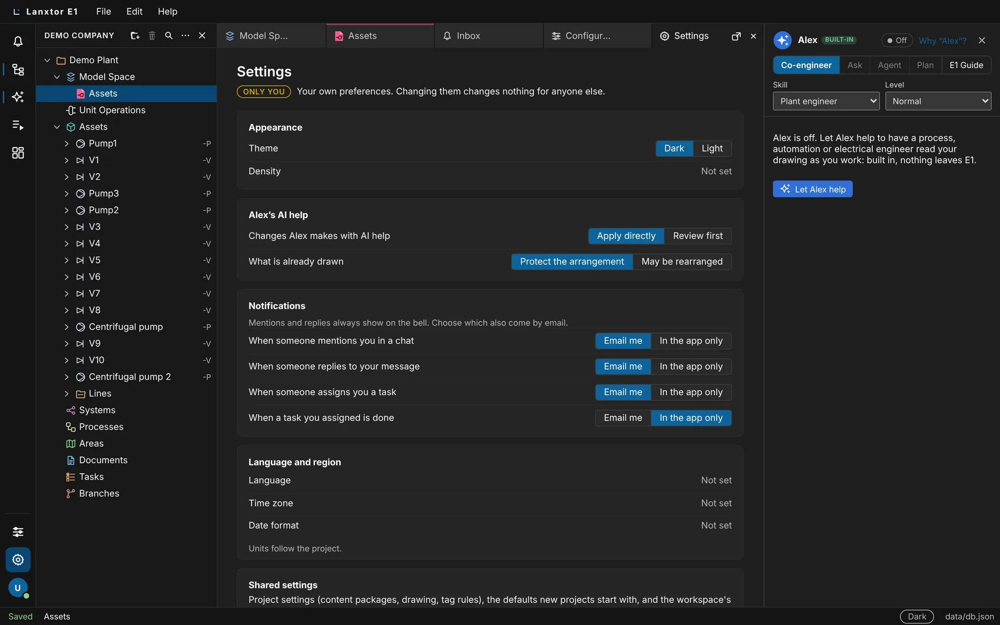
Density, Language, Time zone and Date format show "Not set" and cannot be changed yet.
Watch the lesson: Keyboard shortcuts · Your settings (Getting started with E1 · 8 min) · Show me how in E1: Your settings
Usage statistics: your choice
E1 asks you once whether it may share usage statistics with LANXTOR. It is off unless you agree. With it on, E1 counts per day how long you actively work (only while you click or type), how many clicks and key presses, and which functions and places you use. It never records what you draw, type or name. LANXTOR uses it to see which parts of E1 help, and which need work.
- Where
- The question after you sign in; later: left rail → gear Settings → card Usage statistics
- Who
- Everyone with sign-in, each for themselves
Steps
| # | Action | Expected result |
|---|---|---|
| 1 | Sign in to E1 for the first time. | A box at the bottom right: Help improve E1?, with Share usage statistics and No thanks. |
| 2 | Click one of them. | The box closes and does not come back. Nothing is shared unless you clicked Share usage statistics. |
| 3 | Open Settings. | The card Usage statistics shows your answer: Share or Do not share. |
| 4 | Click Do not share. | Nothing is shared. What was shared before was deleted. |
Each person answers for themselves; your organization's administrators cannot answer for you. A window left open without input adds no active time. See the privacy policy.
Watch the lesson: Usage statistics · What E1 remembers · Units of measurement · … (Getting started with E1 · 7 min) · Show me how in E1: Your settings
What E1 remembers
Every change is saved as you make it, and your view of the workspace comes back after a reload: the same tabs, selection and open rows.
- Where
- Everywhere; nothing to click
- Who
- Everyone
- Before you start
- E1 is open.
Kept for you, on the server
Your open tabs and the active tab, the selection, the expanded rows of the explorer, and your own arrangement of projects (folders and order).
Kept in this browser only
The appearance, the widths of the panels, and which panels are hidden.
Steps
| # | Action | Expected result |
|---|---|---|
| 1 | Click New project in the explorer header, press F2, type a name and press Enter. | The project has the new name; the status bar shows Saved. |
| 2 | Right-click its Model Space → New 2D space, then press Enter. | A tab opens for the 2D space "2D space"; its path ends in "/ name / Model Space / 2D space". |
| 3 | Reload the page. | Saved; the project and "2D space" are in the explorer, and the same tab is active. |
The automated test expects a tab path starting with "Workspace". The path starts with the organization's name where the organization has one; on an installation without one it may read "Workspace".
Watch the lesson: Usage statistics · What E1 remembers · Units of measurement · … (Getting started with E1 · 7 min) · Show me how in E1: Tabs and the path bar
What's new
What's new lists every update of E1, the latest first. Each update shows its date and time, and one line for each new feature and each bug fix in it.
- Where
- Help → What's new
- Who
- Everyone
- Before you start
- E1 is open.
What the window shows
- The heading What's new.
- Each update: its date and time in your own time zone (for example "Thursday 19 November 2026, 09:00"); the first one is marked Latest update.
- Under it, one line per change: New for a new feature or Fixed for a bug fix, and what changed, with the labels as they are on screen.
- The list scrolls; Close, Esc or a click beside the window closes it.
Steps
| # | Action | Expected result |
|---|---|---|
| 1 | Choose Help → What's new. | The window What's new opens; the first update shows its date and time and Latest update. |
| 2 | Read its lines. | Each starts with New or Fixed. |
| 3 | Scroll down, then press Esc. | The earlier updates follow, newest first; the window closes and the focus is back on Help. |
Watch the lesson: Getting help in E1 · Feedback · What is new in E1 (Getting started with E1 · 6 min) · Show me how in E1: What is new in E1
Under construction and the roadmap
Under construction shows where E1 is being built: every milestone, how far it is, what you can try after each stage, and the controls that are already on screen but do not work yet. When you click such a control, this page opens and tells you what it will do.
- Where
- Help → Under construction; it also opens by itself from a control that is not built yet
- Who
- Everyone
- Before you start
- E1 is open.
What the page shows
- The kicker Under construction and the heading Where E1 is being built.
- When it was opened from a control: "Opened from code title — planned in milestone." with a Show it button that scrolls to that entry and highlights it.
- Milestones: MVP progress (a percentage and "N of M stages done"), Now (the current milestone) and a progress bar. The page shows no dates.
- Each milestone: its code (M0 to M9, To design for the features ordered but not designed yet, Parallel, iPad for E1 Reviewer for iPad, Later, Parked; the iPad track and Later do not count toward the MVP progress), title, Done / In progress / Planned, "percent · done/total", a summary, and a fold-out Stages and what you can test with a "N ready to try" badge. Only the current milestone is unfolded at first.
- Each stage shows ✓ or ○, its title and Try it (done: what to test), When done, try (not done yet) or Nothing to test on screen.
- Controls that do not work yet: the controls on screen that do not change the project yet, in groups, each with where it appears and what is to be built.
Steps
| # | Action | Expected result |
|---|---|---|
| 1 | Choose Help → Under construction. | A tab Under construction opens with the heading Where E1 is being built. |
| 2 | Look at the milestones. | The current milestone (for example M2 Platform) is unfolded; stage M2.1 is visible, and M2.8 shows When done, try. |
| 3 | Unfold M0 Foundation with Stages and what you can test. | Stage 6A-6H shows Try it; stage 6I shows Nothing to test on screen. |
| 4 | Click the green dot titled "Open branch" on the Branches section in the explorer. | Under construction opens with "Opened from TREE-05 …" and a Show it button. |
| 5 | Click Show it. | The page scrolls to the entry, which is highlighted. |
Controls that open Under construction
| Control (where) | Entry | Planned in |
|---|---|---|
| Help → Under construction (opens the page without an entry) | — | — |
| New branch in the Branches section's toolbar, and right-click Branches → New branch | SECT-06 New branch | M8 |
| The green dot titled "Open branch" on the Branches section in the explorer | TREE-05 Open branch | M8 |
| An object's Deep view tab | ATTR-04 | M4 |
The Tasks section's filter All / Open / Done works; it does not open this page.
The list of controls names "New view" in Model Space, but there is no such button on screen.
Watch the lesson: Where E1 is being built · Light and dark appearance (Getting started with E1 · 7 min) · Show me how in E1: What is still being built
Units of measurement
Each project has a unit system: MET, Imperial, SI, or a company system. It is chosen in Project settings, and a new value is offered in its units first.
- Where
- Settings → Project settings → Units
- Who
- Everyone sees it; choosing the system needs the Project administrator role
- Before you start
- The project is selected in the explorer.
Steps
| # | Action | Expected result |
|---|---|---|
| 1 | Select the project in the explorer, then open Settings in the left rail → Project settings → Units. | The Unit system list shows the project's system. |
| 2 | Choose another system, for example Imperial. | It is saved at once. A new value now takes the Imperial unit of its group first. |
Watch the lesson: Usage statistics · What E1 remembers · Units of measurement · … (Getting started with E1 · 7 min) · Show me how in E1: Set up one project, or several at once
Messages
Messages will be a place for direct messages between people in your organization. It is not connected yet and has no button on the screen.
Direct messages between the people of an organization. Until then, talk about an object in its chat with @mentions.